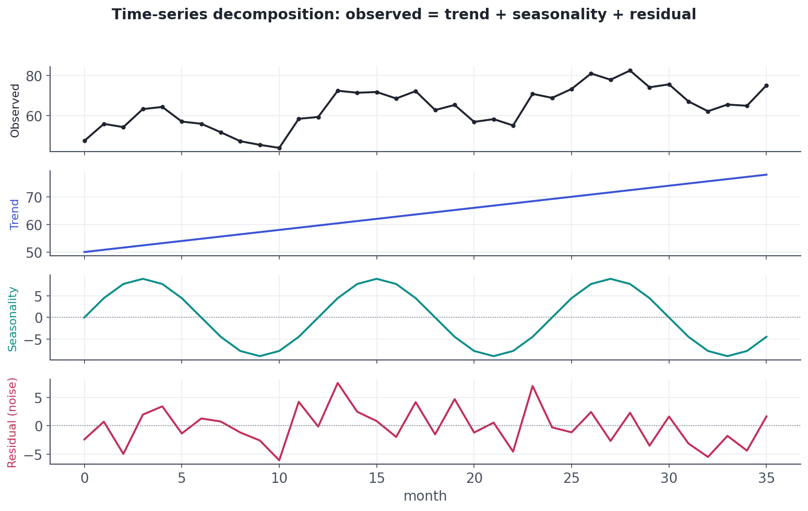
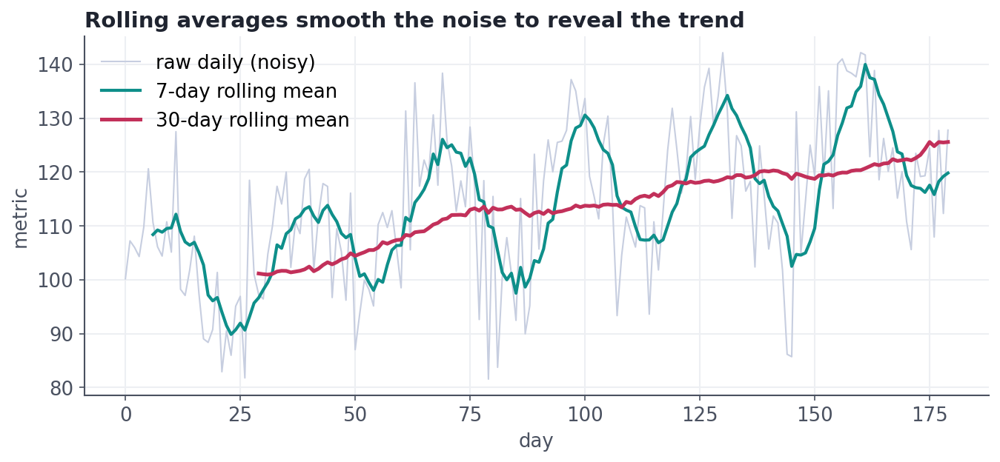

Time-Series EDA
Separate trend from seasonality and noise, smooth with rolling means, and never shuffle time.
Sales by day, signups by week, server load by minute — an enormous share of real data is indexed by time, and it needs its own EDA. The goal is to pull apart what's a lasting trend, what's a repeating seasonal pattern, and what's just noise — and to do it without committing the cardinal sin of time data: shuffling away the order that gives it meaning.
ConceptThe three components of a time series
A time series is usefully thought of as three layers added (or multiplied) together:
- Trend — the long-run direction (slowly growing user base).
- Seasonality — a pattern that repeats on a fixed period (higher sales every December, every weekend, every morning).
- Residual (noise) — the irregular leftover once trend and seasonality are removed.
Separating them — decomposition — turns a confusing squiggle into three readable stories, so you can answer 'are we really growing?' (trend) separately from 'is this just the usual December bump?' (seasonality).

ConceptSmoothing with rolling averages
Raw time series are jagged, and the noise hides the trend. A rolling average (moving average) smooths it: each point is replaced by the average of a window of nearby points (series.rolling(7).mean() for a 7-day window). A short window stays responsive but jumpy; a long window is smooth but lags. Choosing the window to match the seasonality (e.g., 7 days to smooth a weekly cycle) reveals the underlying trend.

ConceptResampling: changing the time grain
Often the raw grain is too fine. Resampling rolls a series up to a coarser period — daily to monthly, minutes to hours — aggregating as you go: series.resample('ME').sum() gives monthly totals. It's groupby for time, and it's how you turn a noisy event log into the clean monthly-revenue chart a stakeholder actually wants.
Worked exampleResample and smooth in code
Build a daily series with a trend and a monthly cycle, roll it up to monthly totals, and take a rolling mean — the two most common time-series EDA moves.
import pandas as pd, numpy as np
rng = np.random.default_rng(2)
days = pd.date_range("2025-01-01", periods=120, freq="D")
sales = pd.Series(
50 + 0.3*np.arange(120) # upward trend
+ 10*np.sin(2*np.pi*np.arange(120)/30) # ~monthly seasonal wave
+ rng.normal(0, 5, 120), # noise
index=days)
# Resample daily -> monthly totals (groupby for time):
print("monthly totals:")
print(sales.resample("ME").sum().round(0).to_string())
# 7-day rolling mean smooths the noise (showing the last few days):
print("\n7-day rolling mean (last 4 days):")
print(sales.rolling(7).mean().tail(4).round(1).to_string())monthly totals: 2025-01-31 1682.0 2025-02-28 1811.0 2025-03-31 2218.0 2025-04-30 2446.0 Freq: ME 7-day rolling mean (last 4 days): 2025-04-27 73.5 2025-04-28 74.7 2025-04-29 77.0 2025-04-30 78.2 Freq: D
The cardinal rule of time data: never shuffle it, and never let the future leak into the past. When you later build models (Track 8/10), you must split train/test by time (train on earlier data, test on later) — a random split lets the model 'see the future,' giving fantastically optimistic results that collapse in production. Respecting time order starts in EDA.
★ Key points to remember
- A time series = trend (long-run direction) + seasonality (fixed repeating pattern) + residual (noise).
- Decomposition separates the three so you can judge real growth apart from seasonal cycles.
- A rolling average (
.rolling(w).mean()) smooths noise to reveal the trend; match the window to the cycle. - Resampling (
.resample('ME').sum()) is groupby for time — roll a fine grain up to a coarser one. - Never shuffle time data; split by time to avoid leaking the future into the past.
◆ Practice▸
s into weekly averages.Show solution & reasoning
s.resample("W").mean(). resample("W") groups the daily points into weekly buckets and .mean() aggregates each week (use .sum() for weekly totals instead). The Series must have a datetime index for resampling to work.
Show solution & reasoning
A random split on time-series data leaks the future into the training set — the model learns from days that come after some test days, effectively peeking at the future, so the 98% is wildly optimistic and won't hold in production. The fix is a time-based split: train on the earlier period, validate/test on the later period (and respect any seasonality). I'd re-evaluate with that honest setup.
◎ Deep dive: additive vs. multiplicative, autocorrelation, and stationarity▸
Additive vs. multiplicative. Decomposition can be additive (observed = trend + seasonal + residual) when the seasonal swing is a roughly constant size, or multiplicative (observed = trend × seasonal × residual) when the swing grows with the level (holiday spikes that get bigger as the business grows). A telltale sign of the multiplicative case is a seasonal pattern that fans out over time — and a log transform (Lesson 5.4) converts it back to additive, which is one more reason logs are so useful.
Autocorrelation. Time-series values are usually correlated with their own recent past — today looks like yesterday. Autocorrelation measures this at different lags, and the ACF plot reveals both the strength of that memory and the seasonal period (a spike at lag 7 screams 'weekly cycle'). It's the time-series analog of the correlation heatmap, and the foundation of forecasting models like ARIMA.
Stationarity. Many classical forecasting methods assume the series is stationary — its statistical properties (mean, variance) don't drift over time. Real series with trends and growing seasonality aren't stationary, so you make them so by differencing (modeling the change from one step to the next) and/or log-transforming. You don't need the machinery yet, but knowing the vocabulary — trend, seasonality, autocorrelation, stationarity — prepares you for forecasting work.
Two things land well. First, decompose: 'I'd separate trend from seasonality before claiming growth.' Second, the leakage point: 'For time-series models I split by time, never randomly, to avoid leaking the future.' That single sentence about time-based validation signals real experience and is a very common interview check.